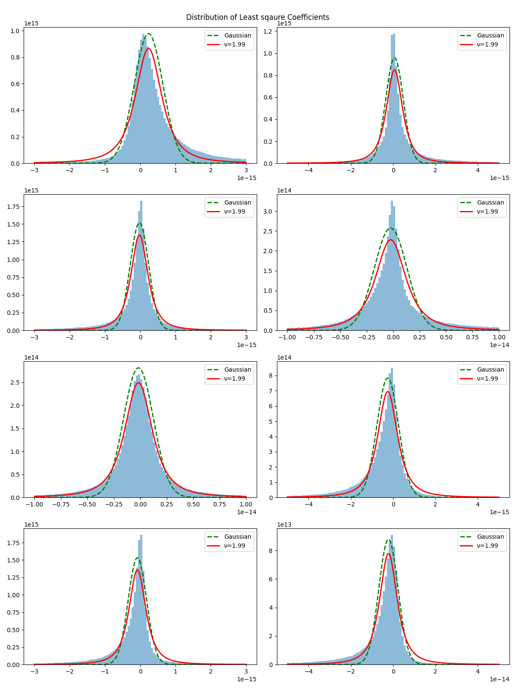
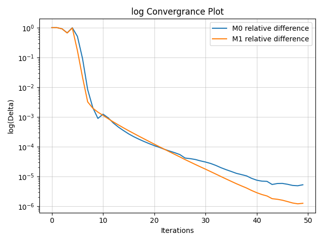
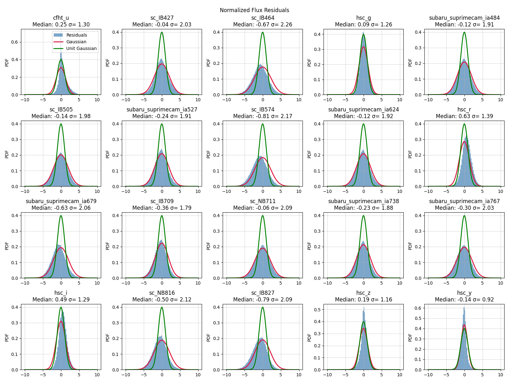
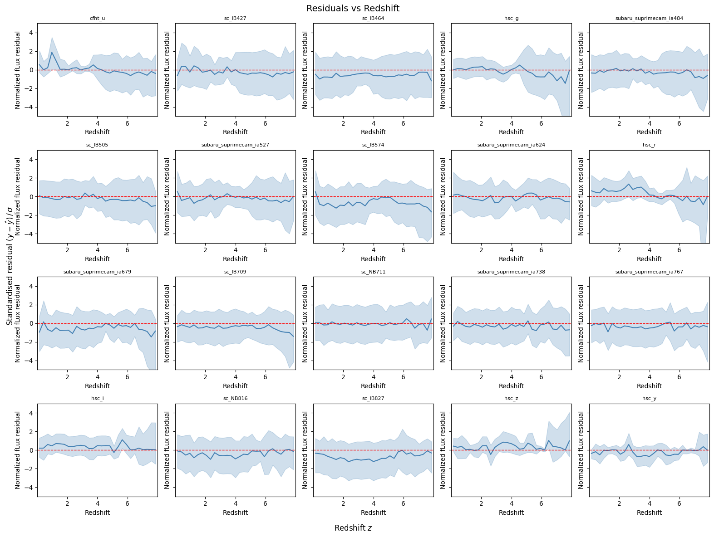
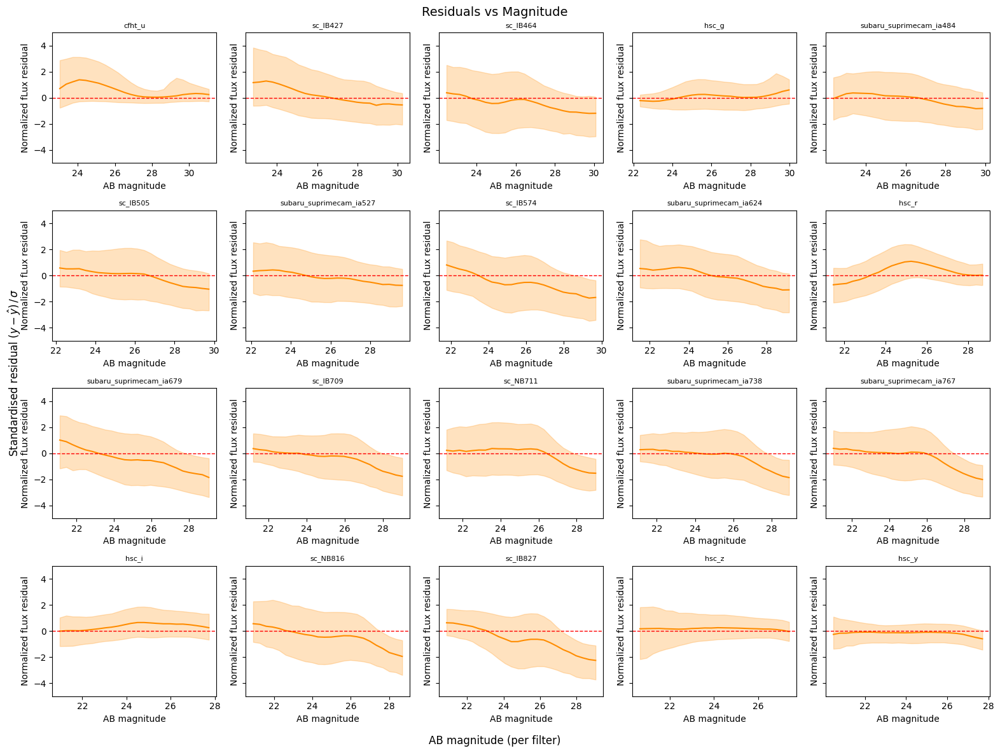
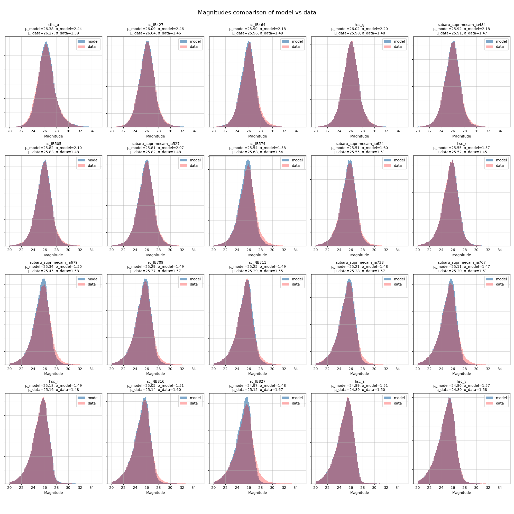

Every galaxy's fitted coefficients are the truth plus noise. Fit a distribution to them naively and you learn the noise, not the truth. This chapter deconvolves the two — with an Extreme Deconvolution algorithm rebuilt to respect two facts about real galaxies: they evolve with redshift, and they have heavy tails.
With VILA's per-galaxy absorption corrections in hand, each galaxy's 20 fluxes are fitted with the 8 NMF basis spectra (redshifted, IGM-attenuated, filter-projected). 20 filters are used in this chapter as the UVISTA and IRAC filters have too much influence in the deciding the coefficients, and hence makes the inference in the other filters worse. The resulting 8 coefficients are that galaxy's address in spectrum-space. Do this 419,654 times to get the coefficients for each galaxy, it encodes what kinds of galaxies exist, in what proportions, at each cosmic epoch. Sample from it and you can fabricate synthetic surveys before a telescope ever opens its shutter.
A detail that matters: not all 26 filters get a vote. A Fisher-information audit shows the infrared bands exert wildly disproportionate leverage on the fit — IRAC channel 2 has an influence score of 1,681 versus ~29 for a typical optical broadband. Included, they hijack the coefficients, nail their own residuals to zero, and wreck everyone else's. Since these bands are also untouched by the IGM, they are simply excluded: the population model trains on 20 optical/near-IR bands.
The first pass at coefficients uses closed-form least squares. But plot the resulting coefficient distribution and a problem stares back:

Histograms of the fitted least-squares coefficients across the full sample, one panel per NMF component. Overlaid on each: a Student-t curve with ν = 2 degrees of freedom (solid red) and a Gaussian matched to the data's standard deviation (dotted green). Every panel shows the same anatomy — a needle-sharp central peak flanked by long, fat tails.
How to read it: the Gaussian is forced into an impossible compromise: to accommodate the tails it broadens until it badly overshoots the peak, and it still assigns essentially zero probability to the most extreme galaxies. The Student-t, with its polynomially-decaying tails, traces both the spike and the outskirts. A fit of the empirical distribution yields ν ≈ 1.98 — about as heavy-tailed as distributions get while keeping a finite mean. The implication cascades through the chapter: both the per-galaxy fitting and the population-level prior are switched from Gaussian to Student-t. Under a Gaussian, the rare galaxies in the tails would be treated as errors and effectively deleted from the learned population.
The Student-t likelihood has no closed-form solution, but it has a beautiful trick: it can be written as a Gaussian whose variance is itself random, which turns the fit into Iteratively Reweighted Least Squares — solve least squares, down-weight the bands that disagreed, repeat. Convergence takes about ten iterations. These robust coefficients seed the main event.
Extreme Deconvolution (XD), from Bovy et al. (2011), answers: given noisy measurements with known, per-object noise, what underlying distribution — when convolved with that noise — best reproduces what we see? It's an Expectation–Maximisation loop that alternately infers each galaxy's de-noised position and updates the population parameters. Off the shelf, though, XD assumes a Gaussian population with one fixed mean. Two renovations make it fit for cosmology:
The E-step is a Bayesian tug-of-war for each galaxy: its own photometry pulls one way, the population prior pulls the other, and the Student-t weight decides how hard the prior is allowed to pull. Convergence: the relative change in population parameters falls six orders of magnitude in ~50 iterations.

The convergence metric — the relative change in the population parameters M₀ (blue) and M₁ (orange) between successive iterations — on a logarithmic axis. Both curves plunge steeply for the first ~10 iterations while the model makes its large corrections, then settle into a steady exponential descent, crossing the 10⁻⁶ stopping threshold at around iteration 50.
Why it matters: EM algorithms are only guaranteed to climb the likelihood, not to converge quickly or to anywhere sensible; a modified EM with custom weights and a piecewise mean has no such textbook guarantees at all. A clean, monotone six-order-of-magnitude descent is the empirical certificate that the two structural modifications didn't destabilise the machinery — the fit lands, and lands firmly.
A generative model is graded on one thing: fold it back through the noise and compare to the data. The report card comes in four figures, each slicing the residuals a different way.

For each of the 20 training filters, the distribution of normalised flux residuals (data − model)/σ across all galaxies. Two references overlaid: a unit Gaussian (green) — the perfect score, meaning the model errs only as much as the noise permits — and a Gaussian matched to each panel's actual width (red). Each panel's title reports its median and standard deviation.
How to read it: shapes are reassuringly Gaussian everywhere — no lumps, no skew — meaning no hidden galaxy sub-population is being systematically betrayed. But the widths tell a stratified story: the high-signal HSC broadbands score σ ≈ 0.9–1.4 (nearly ideal), while the intermediate bands run σ ≈ 1.8–2.3 — the model misses by about twice the quoted error there. Medians mostly sit within ±1 of zero. The diagnosis, argued in the thesis: a three-way mix of (1) the loudest bands dominating the fit, (2) an 8-component basis that can't voice every spectral quirk the narrow bands can hear, and (3) residual calibration imperfections in the error floors. Each is an arrow pointing at future work rather than a flaw in the inference itself.

The median and 16–84th percentile band of the normalised residuals as a function of redshift, one panel per filter. The medians hug zero across the entire z ∈ [0, 8] range in every band; where excursions appear, they show no coherent trend with redshift.
Why this is the plot that matters for a population model: the whole point of the piecewise-linear μ(z) was to let the model follow galaxy evolution. Had that machinery failed, this figure would show it instantly — residuals drifting up or down with z as the model lagged behind the evolving population. The flatness means the offsets seen in Figure 6.3 are global calibration-level effects, not a failure to track cosmic evolution. The redshift-dependent mean is doing its job.

The same residuals, now plotted against each filter's AB magnitude (larger magnitude = fainter). Across the bright and moderate range the median residual tracks zero tightly. At the faint end (m ≳ 27), several filters show a mild dip into negative residuals — the model predicting slightly more flux than is observed.
Interpretation: at these magnitudes sources hover at the survey's detection limit, where noise, background subtraction, and selection effects all conspire; a small over-prediction there is expected and benign. The HSC broadbands, with their superior signal-to-noise, remain flat across their entire range. Implication: results drawn from this model are trustworthy for well-detected galaxies and should be handled with stated care within roughly a magnitude of the detection floor — exactly the regime future deeper surveys will rescue.

For every filter, the distribution of observed AB magnitudes (red) overlaid with the distribution the model predicts (blue). Panel titles give each distribution's mean and standard deviation. Across all 20 filters the two histograms overlap almost completely — model means land within 0.3 magnitudes of the data, model widths within 0.2 magnitudes.
Why this is the headline result of the chapter: this is the population model doing the job it was built for — acting as a generative engine. The per-object offsets of Figure 6.3, real as they are, are invisible at the population level (0.3 mag on axes spanning ~15 mag). The implication: the learned μ(z) and Σ(z) can be sampled to fabricate statistically realistic galaxy catalogues at any redshift — the ingredient survey planners need to rehearse Rubin-LSST and Euclid strategy years before first light, and the natural prior for the redshift inference of the next chapter.